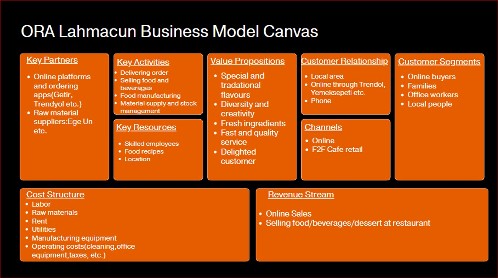
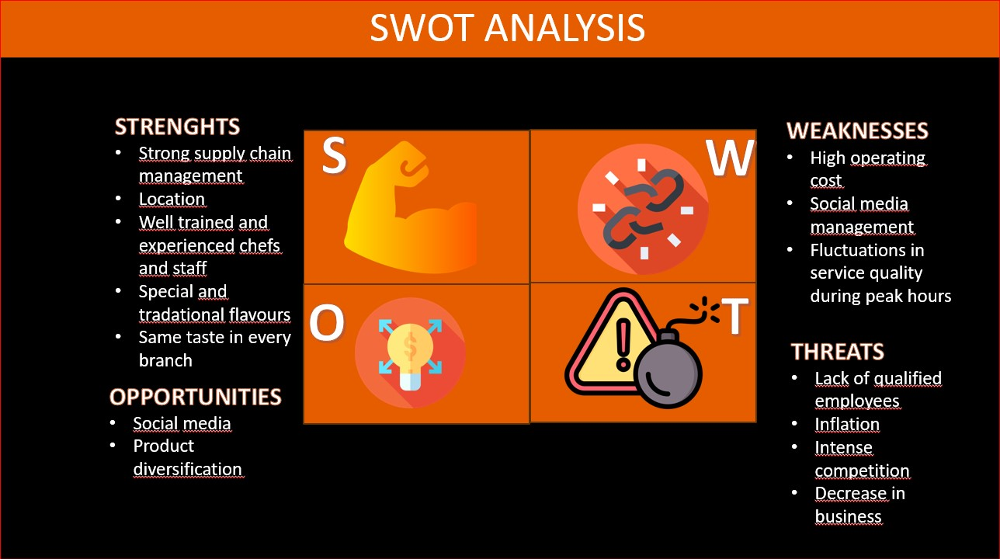
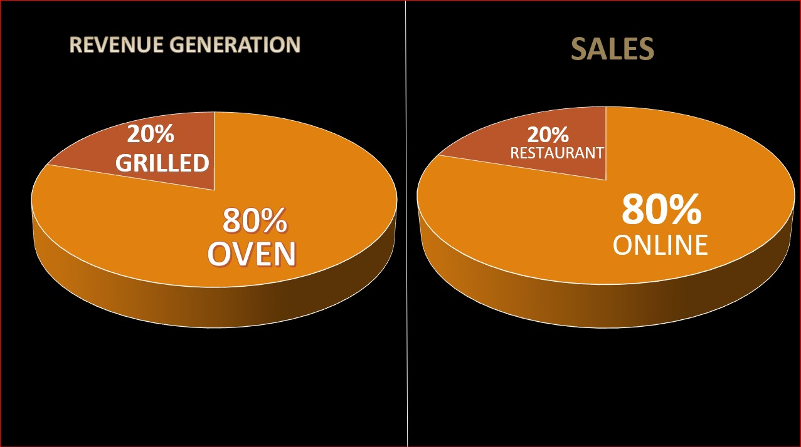
BUSINESS CANVAS MODEL
- Ora Lahmacun delivers unique and traditional flavors through online platforms and café locations, focusing on customer satisfaction with fast, quality service and consistent taste across branches. Supported by strong supply chain management, skilled staff, and strategic partnerships with platforms like Trendyol and Getir, the business serves diverse customer segments, including online buyers, families, and locals. While its strengths lie in supply chain efficiency and product quality, challenges include high operating costs, social media management, and service fluctuations during peak hours. With 80% of revenue generated online—primarily from oven-baked items like lahmacun—and 20% from in-house sales, Ora faces inflation, intense competition, and a lack of qualified employees as key threats. Nonetheless, opportunities in social media and product diversification present growth potential.
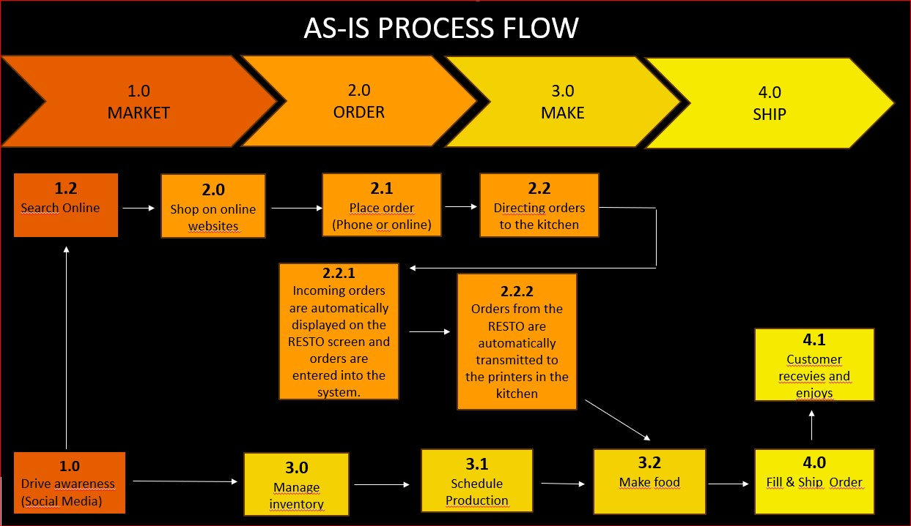
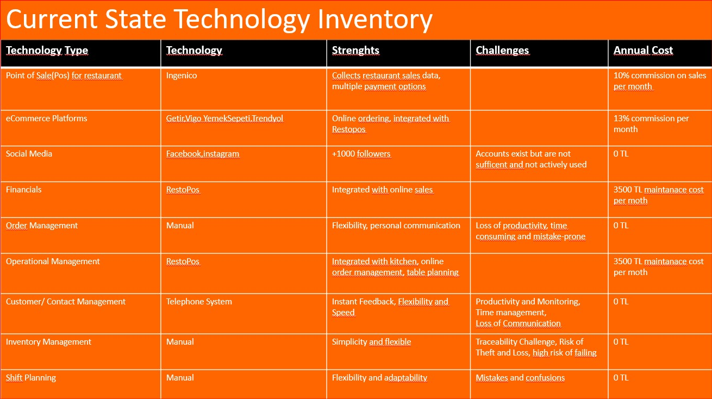
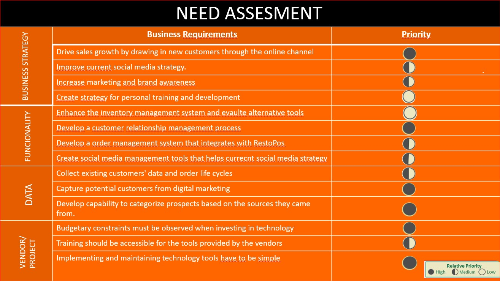
Need Assesment
- Ora Lahmacun leverages various technologies, including a POS system integrated with eCommerce platforms and RestoPos, to streamline operations and improve efficiency. While its manual systems for order, inventory, and shift management offer flexibility, they also pose challenges such as inefficiencies and errors. Social media accounts with over 1000 followers remain underutilized, limiting marketing potential. Ora's needs assessment highlights priorities such as enhancing inventory management, developing a CRM system, improving order and social media management, and leveraging data to drive customer engagement. Strategic goals include boosting sales through online channels, increasing brand awareness, and adhering to budgetary constraints while ensuring ease of use for new tools.
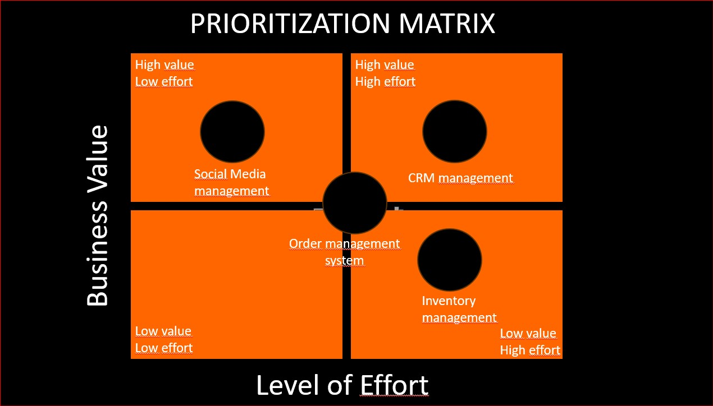
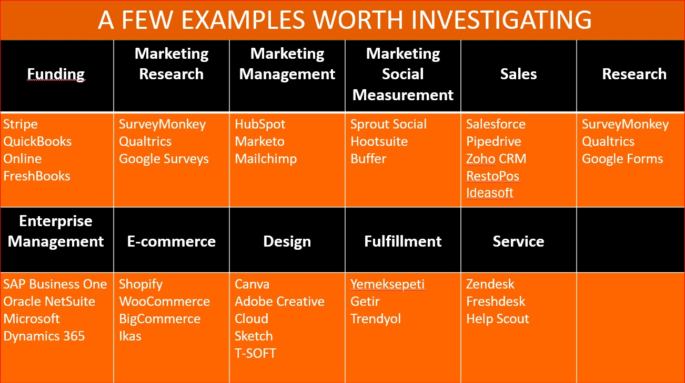
Prioritize Technology Initiatives
- The matrix evaluates tasks based on their Business Value and Level of Effort. High-value and low-effort tasks, such as Social Media Management, are prioritized as they provide significant returns with minimal resources. High-value but high-effort tasks, like CRM Management, are important but require substantial investment. Conversely, low-value tasks with high effort, such as Inventory Management, are typically deprioritized. Additionally, highlights tools across functions like Marketing, Sales, E-commerce, and Design, offering solutions such as HubSpot for marketing management and Shopify for e-commerce.
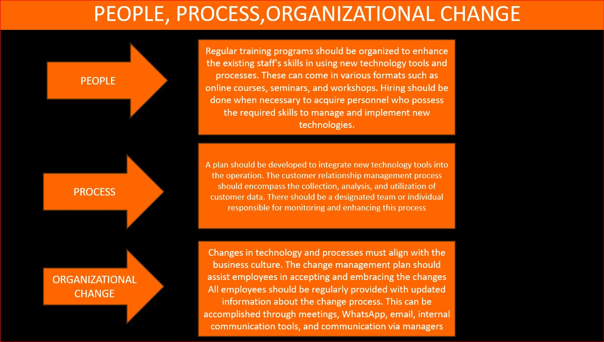
People, Process Organizational Change
- People:Regular training programs such as online courses, seminars, and workshops should be organized to enhance employees' skills. Recruitment should be conducted when necessary to hire personnel with the required skills to manage and implement new technologies.
- Process:A plan should be developed to integrate new technology tools into operations. The customer relationship management process should include collecting, analyzing, and utilizing customer data. A designated team or individual should be responsible for monitoring and improving this process.
- Organizational Change:Technological and process changes must align with the company culture. A change management plan should support employees in accepting and adapting to these changes. Regular updates on the change process should be communicated to all employees through meetings, WhatsApp, email, internal communication tools, and managers.
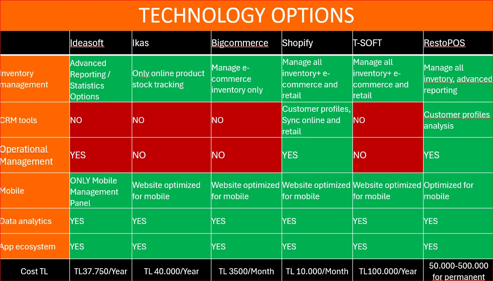
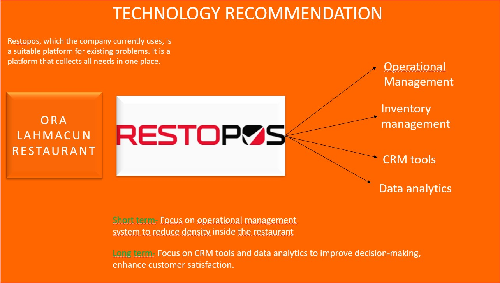
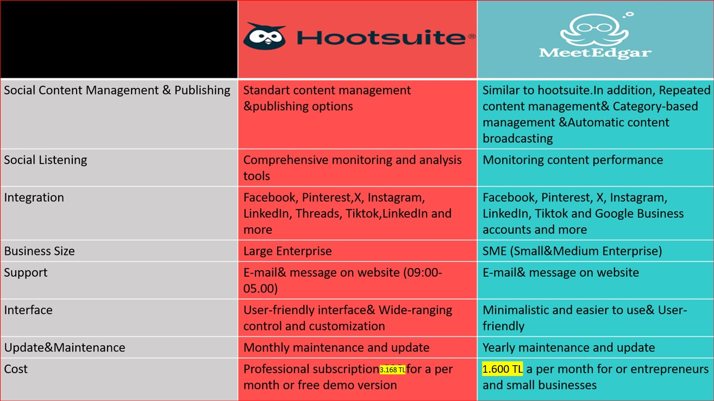
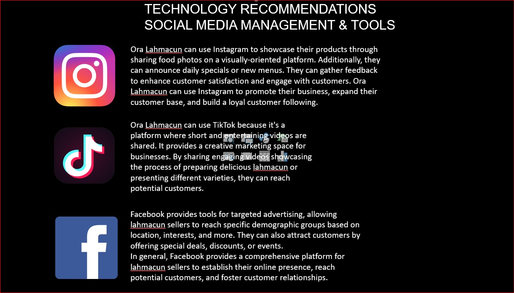
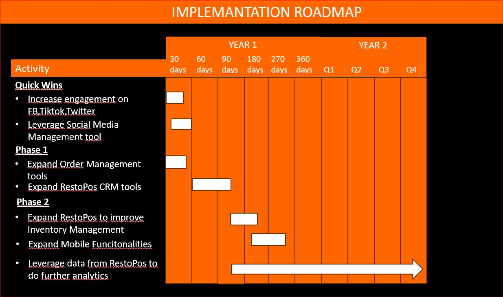
Recommendations & Stratgey Measurement
Long Term Focus:
- Enhance CRM tools to build customer loyalty and improve engagement.
- Utilize data analytics to analyze customer behavior, sales trends, and improve decision-making.
- Optimize inventory management with automation for better stock control.
- Develop a mobile app for convenient order placement, reservations, and feedback, including loyalty programs and order tracking.
Short-Term Focus:
Social Media:
- Instagram:Use visually appealing food photos to engage customers, promote new menus, and build a loyal customer base.
- TikTok: hare creative and entertaining videos to reach a wider audience and attract new customers.
- Facebook:Leverage targeted ads to reach specific demographics and attract customers with special offers or promotions.
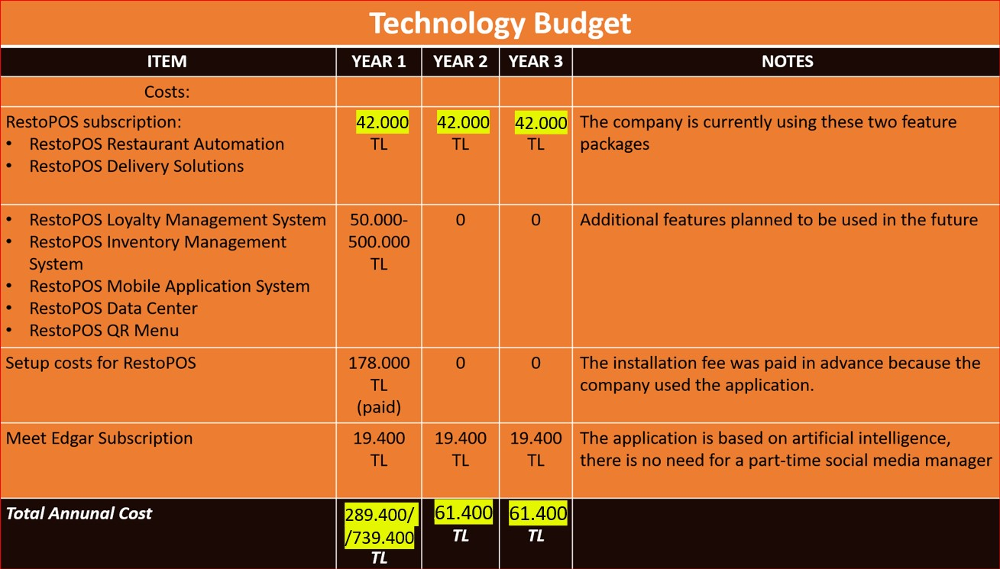
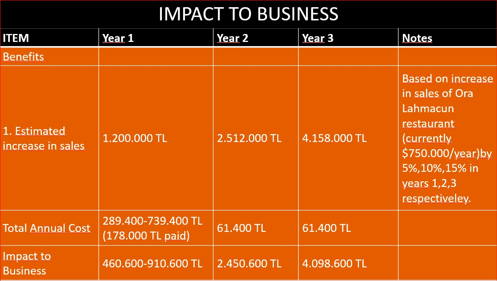
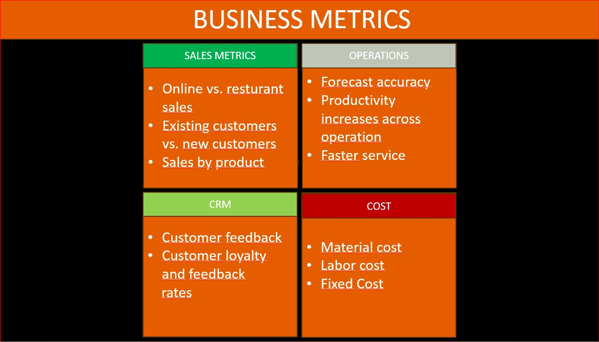
IT Planning, Strategy & Measurement
- Technology Budget:
- The primary cost includes RestoPOS subscriptions for restaurant automation and delivery solutions, costing 42,000 TL annually starting from Year 1.
- Additional tools like loyalty and inventory management are listed as potential future expenses.
- Initial setup fees for RestoPOS (178,000 TL) were fully paid in Year 1.
- The Meet Edgar subscription (19,400 TL/year) replaces the need for a part-time social media manager.
- The total annual cost is 289,400 TL in Year 1, reducing to 61,400 TL in subsequent years.
- Impact to Business:
- Sales are projected to increase annually by 5%, 10%, and 15% for three years, leading to 1.2M TL, 2.5M TL, and 4.1M TL, respectively.
- The net financial impact is positive, with the value created outweighing costs.
- Business Metrics:
- Metrics focus on Sales (e.g., online vs. restaurant sales), Operations (e.g., faster service, productivity), CRM (e.g., customer loyalty, feedback), and Costs (e.g., labor, material costs).